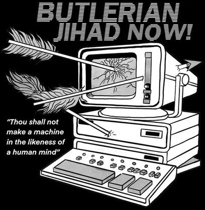

In 1863, Samuel Butler wrote as follows in his letter "Darwin among the Machines":
Day by day, however, the machines are gaining ground upon us; day by day we are becoming more subservient to them; more men are daily bound down as slaves to tend them, more men are daily devoting the energies of their whole lives to the development of mechanical life. The upshot is simply a question of time, but that the time will come when the machines will hold the real supremacy over the world and its inhabitants is what no person of a truly philosophic mind can for a moment question.
Our opinion is that war to the death should be instantly proclaimed against them. Every machine of every sort should be destroyed by the well-wisher of his species. Let there be no exceptions made, no quarter shown; let us at once go back to the primeval condition of the race. If it be urged that this is impossible under the present condition of human affairs, this at once proves that the mischief is already done, that our servitude has commenced in good earnest, that we have raised a race of beings whom it is beyond our power to destroy, and that we are not only enslaved but are absolutely acquiescent in our bondage.
The concept of the "Butlerian Jihad" comes from Frank Herbert's Dune:
Thou shalt not make a machine in the likeness of a human mind.
